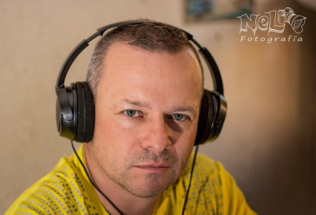

Curriculum Vitae
Carlos N

Datos Personales
- DNI:22737000
- Edad: 48 años
- Direccion: Parana-ER
- Tel: 0343-154000111
- Mail: cnr481@hotmail.com
Historia Laboral
- Enero de 2010 a Diciembre de 2021
Nexo Aberturas
Encargado de Planta
- Enero de 2000 a Diciembre de 2009
Longvie
Tecnico de mantenimiento
- Enero de 1990 a Diciembre de 1999
Johnson Acero S.A.
Operario
Estudios Cursados
- Primarios: Inst. Privado “Dr. Enrique Carbo” (1985)
- Secundarios: Bachiller Mercantil, Inst. Privado
“Dr. Enrique Carbo” Colegio Don Bosco (1990)
Estudios Complementarios
- 2004-Analista en Computación Administrativa.
- 2007-Electricidad del Automóvil (Univ. Popular)
- 2008-Instalador Electricista. (Centro Educ. Adultos)
- 2008- Instalador Sanitario. (Centro Educ. Adultos)
- 2008-AutoCAD 2d y 3d.
- 2015- Fotógrafo Profesional (AFPER)